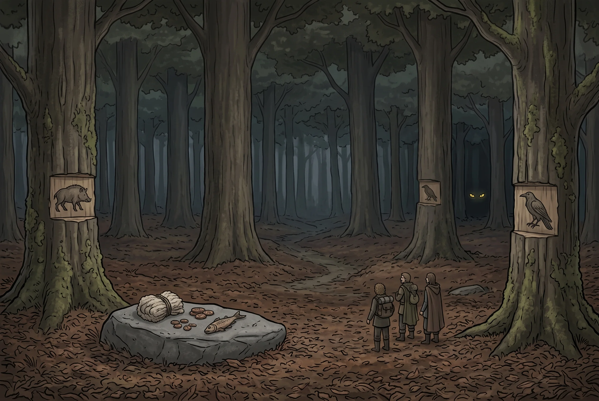

Profunda Forest
Boundary · Nysis · Old-growth timber; the interior claimed
Region: Profunda Forest · Location: Forest Location detail: The country on the southern flank of the Malperm, worked from Fluenti at its margin
The Profunda is the largest unbroken forest in the region and the only one whose middle nobody has seen. It fills the country between the Oray Hills and the northern flank of the Malperm Mtns, and its southern margin is worked hard: this is where Fluenti’s cut is, and the cut has been pushed further in every decade for a century. What that has produced is a graded forest: a fringe of stumps and regrowth, then twenty years of second growth, then the working face, and then, past the working face, the actual Profunda.
The old growth is a different order of thing. Trees five and six feet through, standing far enough apart that the floor is open and dim and covered in a deep springy litter that takes footprints and holds them for months. Very little undergrowth. Very little sound. The canopy is high enough that weather happens above it and arrives at ground level late and softened. River-drivers who have worked the upper reaches describe it in the flattened voice people use for things they have decided not to think about, and the standing advice at Fluenti is that you may go in and you may go out but you do not stop.
The interior is not empty and it is not unclaimed. It is claimed in writing, and the writing is on the trees.
The Varou
See also Varou.
They stand a head over a tall man and are built through the shoulder in a way that reads wrong at distance before you understand what you are looking at. Long faces, pointed ears, a snout rather than a nose. Grey and umber and black. Their hair is worn long and is groomed with enormous care: plaited, weighted, hung with beads and bone and worked metal and small trophies whose provenance is not explained, so that a varou in good order is the most ornamented person in the region, and looks it, and knows it. At night the eyes take a fire and hold it, yellow, and go on holding it after the rest of the shape has stopped being visible.
They are not from anywhere else. They are Nyssian: Touched, out of the same towns as everybody, in whom the wolf came up strongly and then kept coming up once families carrying it found one another. Five or six generations of that and it stopped being a chance of birth and became a people. Why they left is not a story anybody needs told: the Ecclesia grades a man by how little beast is in him, and the machinery that takes a marked child out of its parents’ house has been running for two hundred years.
What matters is what happened after they left, and it is this. A people driven off every piece of ground they ever stood on took a forest, and having taken it have never in a hundred and eighty years given back one foot of it, to anyone, for any reason. Territory is not one varou value among several. It is the organising fact of the whole society, and everything else (the clans, the feuds, the marks, the war with the Verdani) proceeds from it.
Territory
There is no varou nation and no council and nothing anybody could sign a treaty with. There are clans, each holding ground, each with a mark, and each perfectly willing to take a neighbour’s holding if the neighbour looks weak enough to lose it.
The marks are cut into trees along every boundary: a clan sigil, chest height, kept fresh, recut by somebody whose job that is. They are not decorative and they are not folklore. They are a legal instrument, addressed to other varou, and every varou in the Profunda can read every mark in it. That outsiders cannot is not the varou’s problem and has never been treated as one.
Ignoring a mark is understood to be a declaration. There are two places on the southern margin where Nysis built a settlement past a line it could not read, and both are ruins now, and both carry the sigil of the clan that ended them cut deep into the standing timber around the clearing. Fluenti knows where they are. Fluenti does not take parties out to look at them.
The clans fight each other constantly and have done for six generations: holdings shift, a clan is broken and absorbed, a mark stops being recut and something else appears over it. Outsiders who learn this tend to conclude the varou are weak, being divided. They are not divided about the forest. They are divided about which of them owns which part of it, which is a completely different argument, and the moment anyone comes in from outside it is set down and picked up again afterwards.
And they are at war with the Verdani. This is the piece nobody in Fluenti has any idea about. The Verdani want the Profunda (it is the largest living green in the region and there is real Verdant flow in the deep stands) and they have moved on it repeatedly across a century and a half, in the patient incremental way they do everything, and they have been driven out every time. The famous absence of Verdani sign in the interior is not a courtesy between neighbours. It is a war record. Mask Risen have been walked into this forest and have been taken apart, and a Verdani elder in Arbora can tell you what that cost and will not.
The Bloodcall
Running with the inheritance is a nervous quirk: an unusual sensitivity to ambient Crimson, and to the smell of fresh blood, which together produce a rising, narrowing, physically insistent state that is very hard to stop once it has started. Nobody transforms. It is closer to the first second of a real fight, sustained, amplified, and arriving without permission.
Holding it back is the central discipline of varou life and the thing children are raised into before anything else. A kill is bled and dressed far out by people whose particular business that is. A cut hand is taken outside before anybody looks at it. A stranger would take their manners around injury for extreme courtesy and be half right. They are the accumulated etiquette of a people for whom a domestic accident can end a household. They also do not go near blight, ever, since Crimson pools at a fringe, which is why the varou have no interest whatever in Ravenna and never will.
And in war they let it go on purpose.
That is the part outsiders do not survive learning. A varou raiding party comes at night, quiet, disciplined and entirely in command of itself, and at the moment of contact chooses to stop being any of those things. What crosses the last thirty yards is not a soldier. Afterwards there is a clan that has to sit with what its own people did, and a mark to recut, and an understanding on all sides about why the line was where it was.
What Fluenti Calls Trade
At three or four places along the margin there are drops: a flat stone, a split trunk, a stump nobody has cut. A Fluenti woodsman leaves salt, iron, needles, cloth, worked tools, and once a year a great deal of good rope. He comes back in four days and it is gone, and there are furs, or honey, or resin, or a length of deep-stand timber with no knot in forty feet.
Fluenti calls this trade and has called it that for a century, and it is not. It is a licence, renewed annually, on ground the varou consider theirs and are allowing to be cut. The cut has advanced a mile a decade because a mile a decade is what has been permitted, one silent negotiation at a time, by a counterparty Fluenti has never met and does not believe exists.
The whole conversation is conducted in what comes back, and there is a grammar to it that Fluenti follows exactly and has entirely forgotten the meaning of.
Goods taken, goods left. The ordinary case. The licence stands, the rate holds, the face may go on where it is going.
Goods taken, nothing left. This is the one that matters, and it is not a threat. It is a notice, and what it says is: you have taken and given nothing worth having, and there is no goodwill here this year. No warning follows it and none is coming. The correct answer is to stop where you are, work only ground already cut, and leave a heavier drop next season with nothing asked. Fluenti’s drop-men know to do this. They know it as bad luck rather than as diplomacy (a stone that eats) and they do it anyway, which has been sufficient.
Goods not taken at all. Rarer and worse, because it is ambiguous in a way nobody on the Fluenti side can resolve. It may mean the clan holding that margin has declined to deal at all. It may equally mean that clan no longer exists (broken and absorbed by a neighbour in some feud the loggers will never hear about) and that the ground now belongs to somebody who has never agreed to anything, has no interest in the arrangement, and does not know the stone is a stone. Untouched goods have preceded both of the ruined settlements.
Something left that was not traded for. A recut sigil laid on the drop itself rather than a tree. This has happened four times in living memory and on every occasion the working face came back half a mile within the month.
The men who work the drops have a folk explanation involving the forest itself and are not encouraged to develop it. Their fathers worked the same stones and taught them the rules as luck: never leave less than last year, never come back before the fourth day, and if it is still sitting there, do not touch it. Walk away and come again in the spring. Nobody has ever tried leaving less. It has held for a century, and the whole of Fluenti’s timber trade rests on a protocol nobody in Fluenti can read.
The northernmost drop came back empty this spring. The drop-man reported it, was heard, and was overruled, because this year’s stand is worth more than the trouble.
Why the Crews Come Out Short
Two causes, and the crews cannot tell them apart, which is exactly why the fear works.
Some of it is enforcement. A crew that cuts past a mark has made a declaration, in a language it did not know it was speaking, and the answer comes at night.
The rest is accident, and it is the worse of the two. A cutting crew is a moving hazard (axes, saws, wet ground, tired men) and sooner or later on any long job somebody opens his leg to the bone eight hundred yards upwind of a hold where a family is going about its afternoon. Nobody decides anything. It is fast and it is close, and afterwards there are people in the interior who have to live with it, and a crew on the margin who saw something in the dark and will not say what.
The varou understand both mechanisms perfectly. They have a remedy for the first, which is the marks, and none at all for the second, and explaining it would mean revealing themselves, and the day Nysis learns there is a nation of Ferals holding the Profunda, the Ecclesia comes, and it does not come to negotiate.
Features
- Trees five and six feet through, standing far apart
- Deep litter that takes a footprint and keeps it for months
- Open, dim floor and almost no undergrowth
- Weather arriving late and quiet through the canopy
- The working face (stumps, skid trails, shouting) and silence beyond it
- Clan sigils cut chest-high into boundary timber, and kept fresh
- Two ruined settlements, and the mark of who ended them cut all round the clearing
- No Verdani sign anywhere in the interior, and what that actually means
- Yellow eyes holding a firelight after the shape has gone
- Beads, bone and worked metal plaited into hair, and trophies not explained
- Drop-stones on the margin, and a rate nobody has ever tried to lower
- Rules kept as luck: never less, never before the fourth day, never touch what was left
- Compass bearings that do not close, and no reason found for it
Quest Starter
A cutting crew has gone past the working face (deliberately, chasing a stand of timber worth more than the whole season) and sent back one man with a bearing and a request for help. The bearing does not reconcile with any map. Fluenti will pay well and will not send its own people. What Fluenti has not mentioned, because it does not think it signifies, is that the crew is working north of a drop-stone that came back empty in the spring, and that a company man was told about it in March and decided the timber was worth more than the trouble.